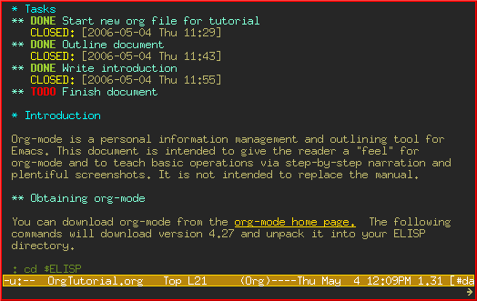

This is a bit silly, because we've already started a new file. So, let's mark the TODO item DONE by moving the cursor onto that line and hitting C-c C-t, which runs the command org-todo.
This is a bit silly, because we've already started a new file. So, let's mark the TODO item DONE by moving the cursor onto that line and hitting C-c C-t, which runs the command org-todo.转载自http://hokmen.chan.googlepages.com/OrgTutorial.en-cn.html
Introduction
Org-mode is a personal information management and outlining tool for Emacs. This document is intended to give the reader a "feel" for org-mode and to teach basic usage with step-by-step instructions and plentiful screenshots. It is not intended to replace the manual, as only a subset of org-mode's features are covered.
Update — This document has been translated into Japaness by a Mr. T. Okano. Special thanks to Mr. Okano for doing this.
Org-Mode是为Emacs编写的个人信息管理以及编写大纲的工具。本文档将使用逐步的用法说明和丰富的截图，教给读者Org-Mode基本的应用，让读者对它有基本的认识。本文不是官方手册的替代品，只涵盖了Org-Mode的特性的一个子集。
更新情况：本文档已经被Okano先生翻译成日文。在此向他致谢。
Obtaining org-mode
You can download org-mode from the org-mode home page. You should download at least the latest version to follow along with this tutorial.
你能从Org-Mode的官方网页上下载到它。本教程推荐使用最新版本的Org-Mode。
Installation
Add the following to your .emacs:
在你的.emacs文件中加入如下几行：
(add-to-list 'load-path "PATH_TO_WHERE_YOU_UNPACKED_ORGMODE") (require 'org) (add-to-list 'auto-mode-alist '("\\.org$" . org-mode)) (define-key global-map "\C-cl" 'org-store-link) (define-key global-map "\C-ca" 'org-agenda) (setq org-log-done t)
This will make sure org gets loaded, and some basic global key combinations are defined. We'll go over what "org-store-link" and "org-agenda" do later in this document.
这样，就能加载Org-Mode并且定义了它的快捷键。我们将在本文档讲述org-store-link 和org-agenda两种模式。
One more thing—it's best to set aside a separate directory where your org files will be kept. I recommend using ~/org.
另外，最好用一个独立的目录来放你的org文件。我推荐用~/org目录。
The basics
This section illustrates basic org-mode usage by showing how I used org-mode to create this document.
本章将通过描述使用Org-Mode创建本文档的过程，讲解基本的Org-Mode应用。
Creating a new file
If you've configured your Emacs initialization file as suggested above, Emacs should enter org-mode whenever you visit or create a file with the extension ".org".
如果你已经照前面的建议配置好了你的Emacs初始化文件(.emacs)，那么当你打开或者创建一个.org后缀的文件时，Emacs就进入了Org-Mode。
I created a new file called "OrgTutorial.org" and saw the "Org" indicator in the modeline, showing that we've entered org-mode.
我创建了一个文件名为"OrgTutorial.org"的新文件，Emacs的模式栏上出现了"Org"，表示我们进入了Org-Mode。
Simple task list
First I entered a headline called "Tasks" to keep tasks under. This isn't necessary but is often convenient, especially when you want to keep tasks separate from the body of a document you're writing.
首先，我输入一个名为"Task"的标题。虽然不一定要这么做，但常常会让事情方便一点，尤其是当你想把任务列表和你正编辑的文档的正文分开的时候。
First-level headlines begin with one star; second-level headlines begin with two stars, and so on.
第一级的标题以一个""号开头，第二级的标题用两个""号开头，以此类推。
In org-mode, TODO items are always headlines. I entered a TODO item for "Start new org file for tutorial."
在Org-Mode里，所有的TODO项目都是以标题形式存在。我现在输入一个TODO项目： "Start new org file for tutorial."
This is a bit silly, because we've already started a new file. So, let's mark the TODO item DONE by moving the cursor onto that line and hitting C-c C-t, which runs the command org-todo.
这有点无聊，因为我们已经创建了一个新文件。这样，让我们把光标移到这一行TODO项目上并按Ctrl-c和Ctrl-t，把它标记为"DONE"。
Here is the result:
这里是结果：

Notice how org-mode uses a timestamp to record when a TODO item was closed.
Org-Mode用了一个时间戳来记录一个TODO项目在什么时候结束。
Let's add some more TODO items. Position the cursor on the next line, and hit M-shift-RET to call org-insert-todo-heading. You can hit it several times to add several TODOs.
让我们输入更多的TODO项目。光标移到下一行，按Meta-Shift-Enter，调出 org-insert-todo-heading，按多若干次，就能加入若干个TODO项目了。

Using headlines to structure a document
Often the best way to organize your ideas is an outline. My next step is to outline the different topics of the tutorial. By doing this, you break up the intimidating blank page into a series of less-intimidating smaller chunks. Then it becomes easier to fill them in.
通常，使用大纲是最好的组织你的观点的方法。下一步，我把本教程的不同主题放进大纲。这样，整个空白页面就能分成一个个小块，让我能更容易地填入内容。
Remember that one star begins a first-level heading, and two stars begin a second-level heading. If you need deeper nesting, go ahead and use three or more stars!
一个星号表示第一级标题，两个星号表示第二级标题，如果你需要更多的层次，就用更多的星号。
Here is what it looked like after I finished outlining the document:
我完成本文档的大纲后，效果如下图：
Notice I marked "Outline document" as DONE after I finished.
如上图，我完成大纲后，把"Outline document"标成了"DONE"。
Filling in the sections
You can easily add body text underneath any headline.
你能在任何标题的下面加入正文。 
Links to other places
In the section on "Obtaining Org-mode" I need to provide a link to the org-mode website. A special bracket syntax is used when linking:
在“下载Org-Mode”一节中我需要提供一个Org-Mode官方网页的链接。我使用了一个特殊的含有方括号的语法来表示这个链接：
[[link][description]]
Watch how I first type the link and description, leaving open the last bracket:
看我是怎样输入这个链接和它的描述，不输入最后的半边方括号： a
a
Then when I type the last bracket, the link "collapses" and simply shows the description.
然后我输入这半边方括号，该链接消失，只显示它的描述。
Try moving the cursor over the link and press C-c C-o for org-open-at-point.
移动光标到该链接上，按Ctrl-c和Ctrl-o，调用org-open-at-point。
You can also link to local files. Try visiting another file —for example, your emacs initialization file. Then hit C-c l to call org-store-link. You'll see a message that a link was stored to the current location in the file you're visiting.
你也能链接到本地文件。试试看浏览另外一个文件，比如说你的emacs初始化文件 (.emacs)，然后连续按Ctrl-c和l键调用org-store-link。你会看到一条信息，说已经把你正在浏览的文件中的位置存为一个链接。
Then switch back to your org-mode buffer and paste the link using C-c C-l to call org-insert-link. (You may need to press the arrow keys to scroll through and find the link you just recorded.)
然后回到你的Org-Mode的buffer，用Ctrl-c和Ctrl-l来调出org-insert-link 来插入该链接。(你可以用方向键来翻查到你刚才记录的链接。)
Overviews of a document
By this time, my document is getting longer and I can no longer fit it all on one screen. Org-mode makes it easy to get an overview of your document by pressing shift-TAB.
这时，我的文档更长了，一个屏幕容纳不下它的全部内容。使用shift-tab这个组合键， Org-Mode能让你更容易了解你的文档的概要。

Notice that just the top-level headings are shown. You can hit shift-TAB again to show all headings, including TODO items:

需要注意的是只会显示最高层的标题。再次按下shift-tab的组合键，所有的标题和 TODO项目就会显示出来：
Then hit it again to show a normal view of the document, with section bodies shown: 
然后，再按这个组合键，显示正常情况的，包含各个章节的整个文档：
Adding notes to a task
You can put as much text as you want under a TODO item's heading. In fact, you can even have subheadings under a TODO, and TODOs within TODOs!
你能把你所需要的尽可能多的文字放在一个TODO项目的标题之后。甚至，你能把副标题放在一个TODO项目的下面，把TODO项目嵌套起来。
Being able to annotate tasks makes it easy to collect related links and thoughts along with a task. Being able to nest tasks is great for modeling workflow—quite often, a larger task is broken into smaller subtasks you want to check off as you do them.
对任务进行注释，让收集和处理和某个任务相关的链接和想法更容易。任务的层次化嵌套对工作流程的模式化很有帮助——通常，一个大的任务会细分为更小的，可以逐项完成的子任务供你察看。
A taste of advanced features
Before we finish, we'll touch on org-mode's global TODO list, scheduling, and agenda features. These are used to combine relevant TODO items from different org files into a prioritized, chronological display. You can also use it to see which tasks were completed, and when.
在本篇简明教程结束前，我们将介绍Org-Mode的全局TODO列表、计划任务和日程表 (agenda)功能。这些功能用于从不同的org文件中把相关的TODO项目合并成以重要性和发生的时间为顺序陈列的项目列表。你也能用这些功能来知道哪些任务是已经完成的，以及它们是什么时候完成的。
Setup
First you must set the variable org-agenda-files so that org-mode will know which files to search for TODOs and scheduled items.
首先，你必须设置变量org-agenda-files，以便让Org-Mode知道在哪些文件里搜寻TODO和计划项目。
Let's imagine you already have several org files—say, one for work, one for home, and one for school.
假设，你已经有了几个org文件，比如说，一个工作用的org文件，一个家务用的 org文件，一个学校用的org文件。
Then you'd add the following to your emacs initialization file:
这样的话，你可以在你的emacs初始化文件(.emacs)里加入如下几行：
(setq org-agenda-files (list "~/org/work.org" "~/org/school.org" "~/org/home.org"))
The global TODO list
Press C-c a t to enter the global todo list. Org-mode will scan the files in org-agenda-files and present a listing of all the open TODO items:
按Ctrl-c、a、t进入全局TODO列表。Org-Mode将在org-agenda-files里的文件中搜索开放的TODO项目，并列出项目的列表： [[../images/org/tutorial-16.png]
You can move the cursor around to the different todo items, and hit "t" to mark an item DONE, or hit RET to jump to the source file where the TODO is located.
你能在不同的TODO项目中移动光标，并用t键把项目标注成“DONE”（已完成）；或者在TODO项目上按回车跳到该项目所在的源文件。
Scheduling tasks and using the agenda
Let's say I want to schedule "Finish document" for today. I move the cursor to the line after the TODO item "Finish document", and hit C-c C-s to run org-schedule. The calendar pops up, and I can either enter or click the desired date:
我计划今天来做“Finish documnet”（“完成文档”）。我把光标移到TODO项目“Finish documnet”（“完成文档”）上，按Ctrl-c和Ctrl-s来运行org-schedule命令。日历跳了出来，我能输入或者点击我选择的日期：

Once I select the date, org-mode inserts a scheduling timestamp after the TODO item:
当我选择好日期，Org-Mode在这个TODO项目后插入了一个时间戳：

Now save your file, and hit C-c a a for org-agenda. A display of this week's scheduled items are displayed:
现在把你的文档存盘，并依次键入Ctrl-c、a、a来进入org-agenda模式。本星期的计划中项目显示了出来：

Now press "l" (lowercase L) to turn on log display. This displays the all finished tasks and their completion times.
现在按l键（L的小写字母）显示日志（log）。这样会显示所有已经完成的任务和它们完成的时间。

Farewell
This has been only a brief tour of org-mode. More excitement awaits you at the online org-mode manual.
本文只是Org-Mode的简明教程。在Org-Mode的在线文档里有更多的让人兴奋的特征等着你发掘。
Author: Original Version: David O'Toole Translate by: Hokmen Chan <hokmen (dot) chan (AT) gmail (dot) com>
Date: 2007/01/01 12时15分30秒